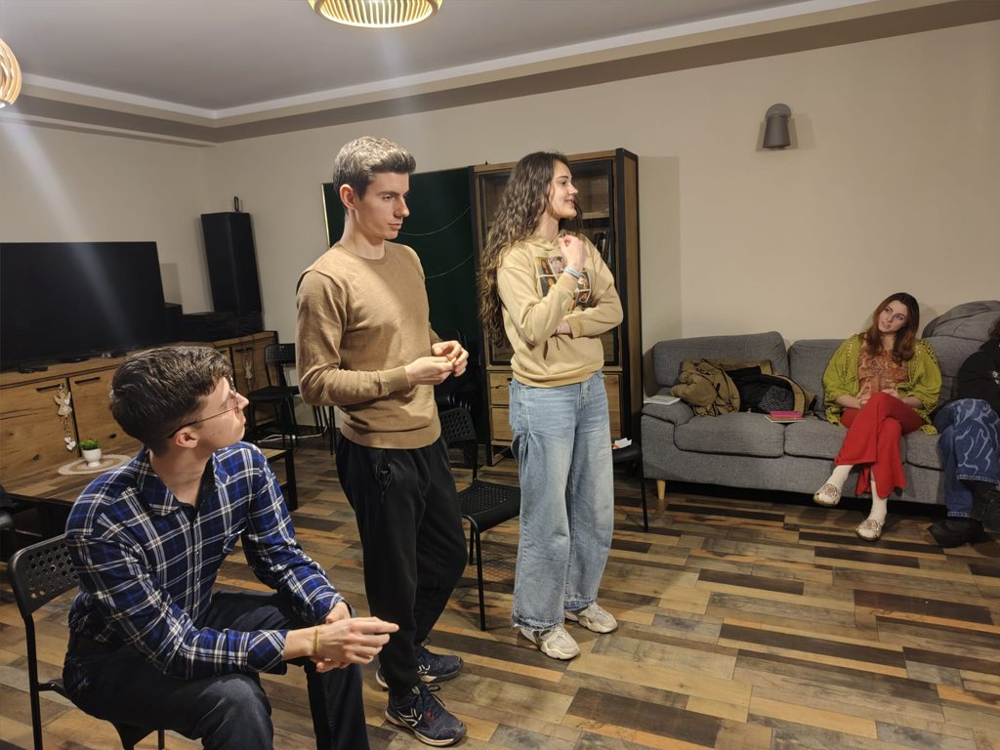
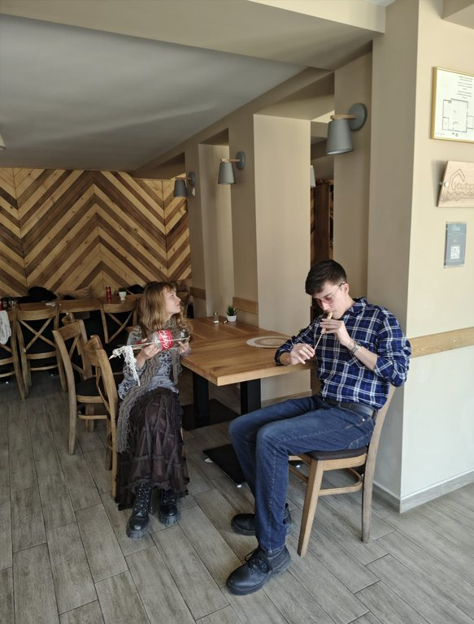
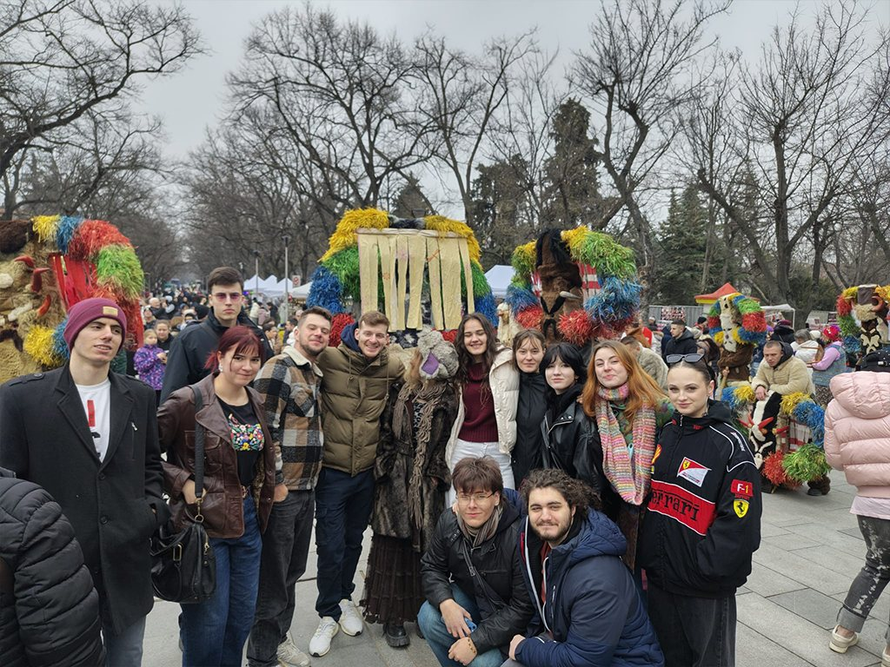

„Faciliteasy“ беше обучителен курс по Еразъм+, проведен в Стара Загора, България, между 23 февруари и 3 март 2026 г., който събра младежки работници от Румъния, Полша, България и Гърция, за да развият своите умения за фасилитация, лидерство и управление на неправителствени организации чрез неформално образование и учене чрез правене. Обучението започна с дейности за изграждане на екип и творчески упражнения, вдъхновени от театъра и разказването на истории, които създадоха атмосфера на сътрудничество и откритост за цялата седмица.
Участниците опознаха град Пловдив, черпейки вдъхновение от неговата история и културна енергия, които по-късно вплетоха в разработването на собствените си концепции за уъркшопи.


По време на проекта участниците се включиха в задълбочена рефлексия върху реални предизвикателства в младежката работа, като споделяха опит и го превръщаха в театрални персонажи, симулиращи често срещана групова динамика като неотзивчиви участници, езикови бариери или липса на ангажираност.
Работейки в екипи от различни националности, те разработиха и фасилитираха иновативни уъркшопи, включително създаване на документални филми, съвместни музикални сесии, упражнения по комуникация и симулации за изграждане на доверие. Дейности като „Wild Films“, „Junkyard Orchestra Battle“, „Вербална срещу невербална комуникация“, „Сляп конфликт“ и „Куиз шоу: Кой знае?“ предизвикаха фасилитаторите да се адаптират в реално време, да управляват конфликти и да поддържат приобщаваща учебна среда, докато участниците активно играеха сложни роли.
Специален културен акцент беше празнуването на Мартеница / Мърцишор и участието в Парада на мартениците в Стара Загора, наред с междукултурните вечери, които укрепиха сплотеността на групата.

Проектът завърши със сесии за рефлексия, оценка и церемонията Youthpass, отбелязали края на едно интензивно учебно преживяване. Като краен резултат участниците създадоха заедно практическа книга за фасилитация, която събира уъркшопи, методи и съвети, за да бъдат споделени с по-широката общност на младежката работа.